From The stage at the Bauhaus Die Bühne im Bauhaus.
Oskar Schlemmer, 1925
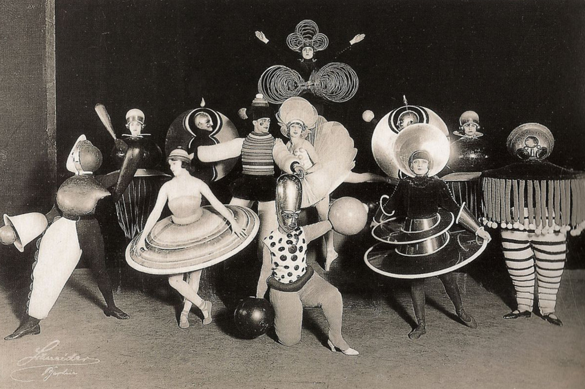
Triadisches Ballett's artists.
Oskar Schlemmer, 1920
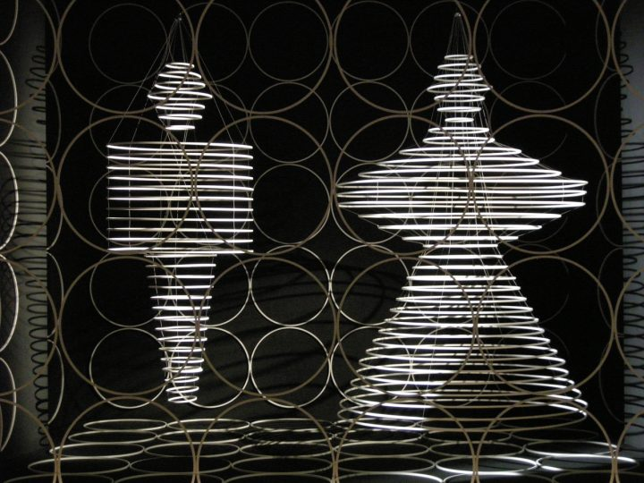
Dance des cerceaux
Oskar Schlemmer, 1927
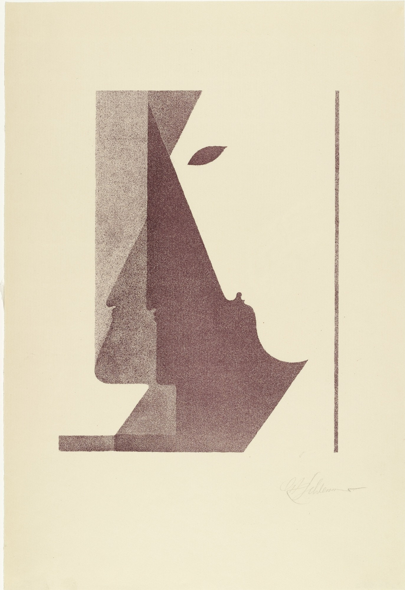
Drei Profile zwischen
der Senkrechten und der Diagonalen Spiel mit Köpfen
Oskar Schlemmer, 1920
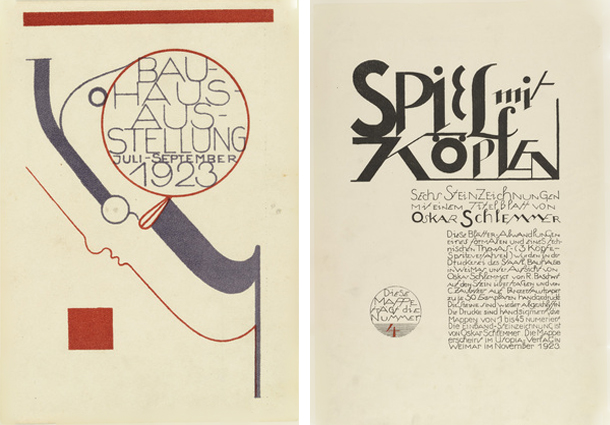
Postkarte für die Bauhaus-Ausstellung
Oskar Schlemmer, 1923
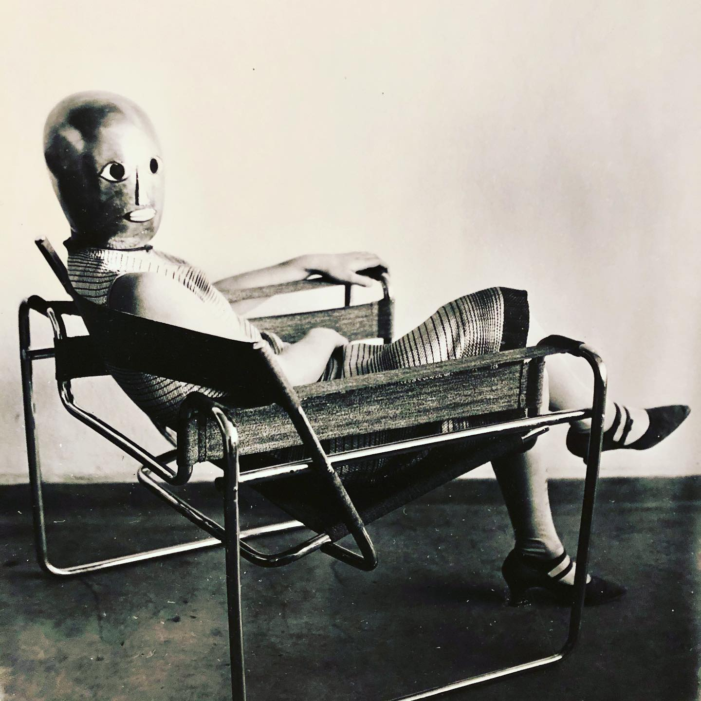
Frau sitzt im Stahlrohrstuhl von Marcel Breuer
Oskar Schlemmer, 1926
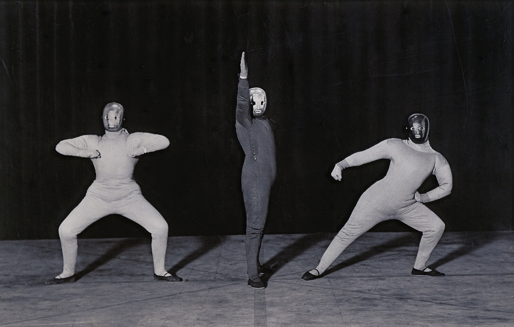
Danse de l'espace
Oskar Schlemmer, 1927
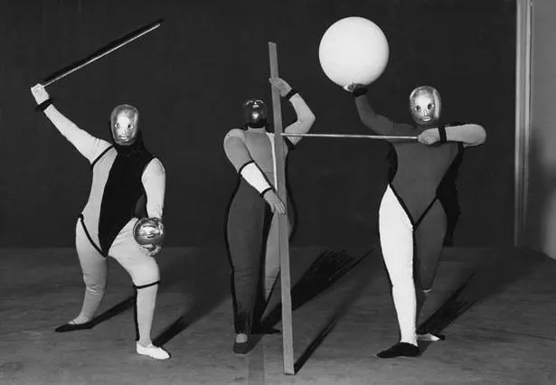
Abbildung 6a: Formentanz
Oskar Schlemmer
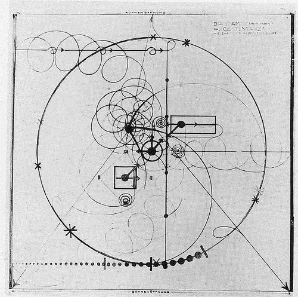
Diagram for Gesture Dance
Oskar Schlemmer, 1926
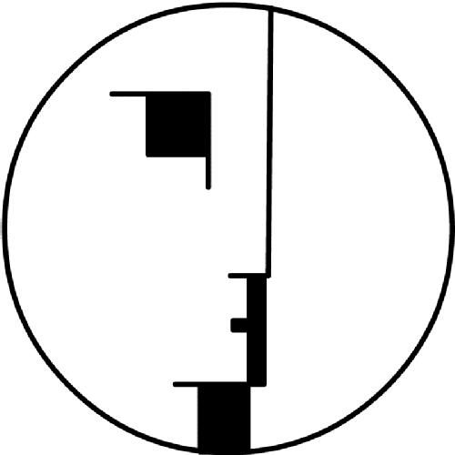
Logo de la Bauhaus Weimar
Oskar Schlemmer, 1922
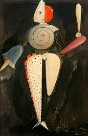
HANDGEMALTES ÖL-LEINWAND-KUNSTWERK
Oskar Schlemmer
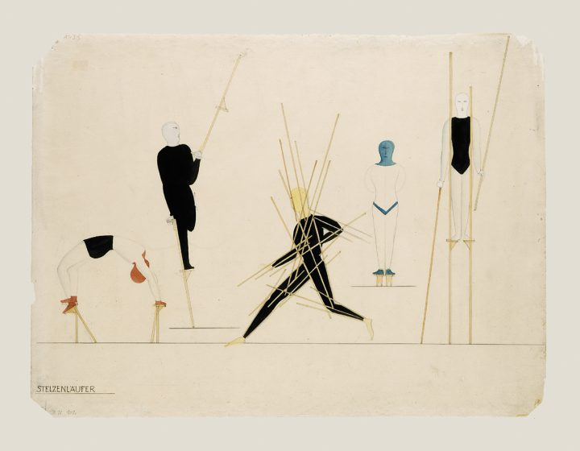
Stäbetanz / Coureur des échasses
Oskar Schlemmer, 1927
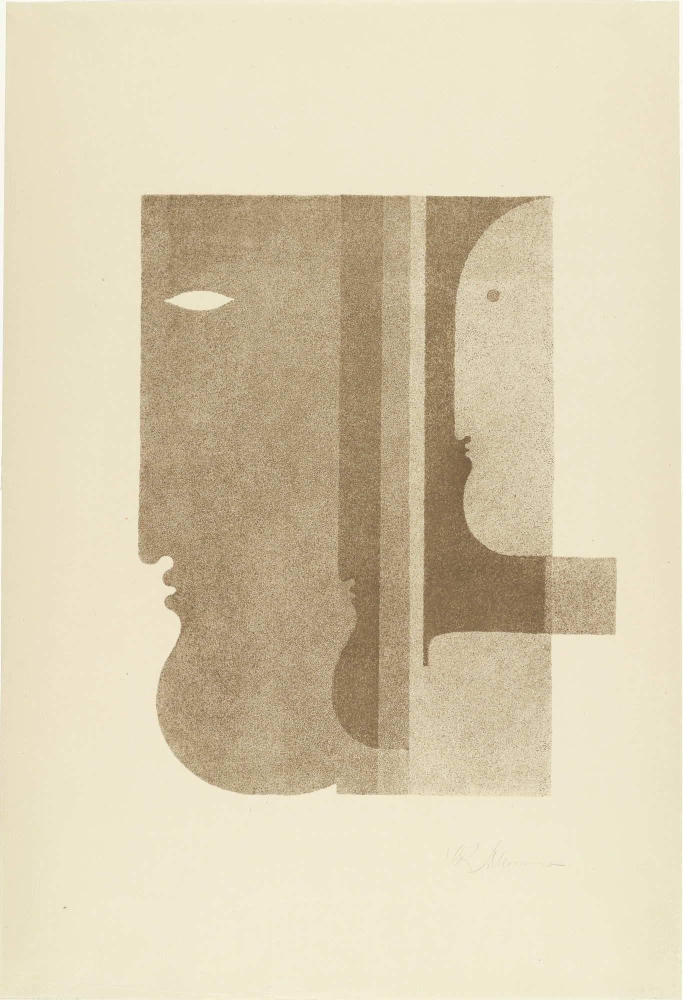
Zwei Profile nach links, eines nach rechts aus „Spiel mit Köpfen“
Oskar Schlemmer, 1920
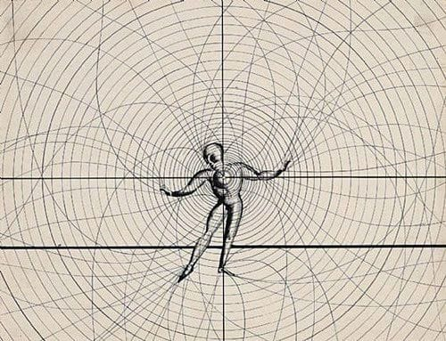
Mensch und Kunstfigur
Oskar Schlemmer, 1925
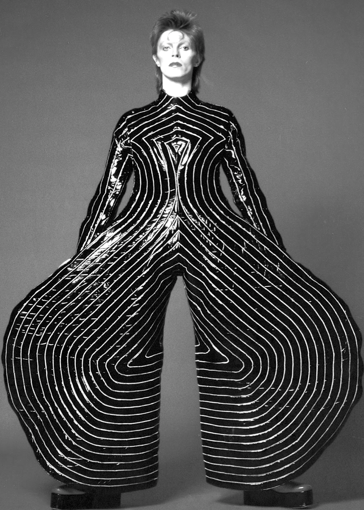
David Bowies „Ziggy Stardust“-Kostüme – Bauhaus-Ballettkostüm aus der Regie des Triadischen Balletts
Oskar Schlemmer, 1922
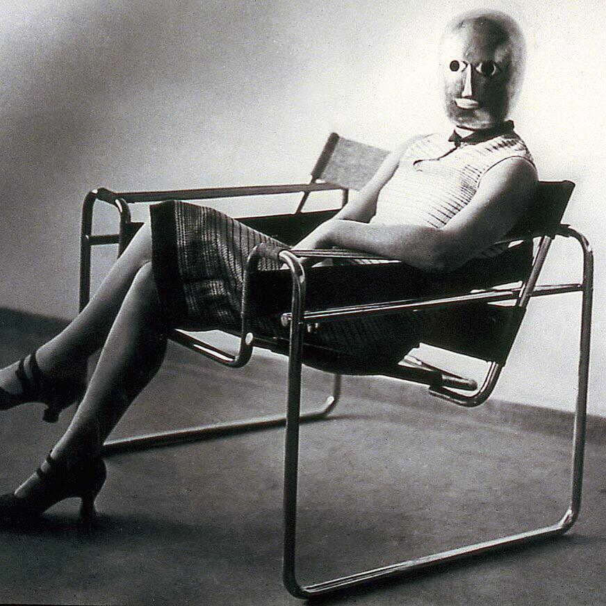
Frau sitzt im Stahlrohrstuhl von Marcel Breuer_2
Oskar Schlemmer, 1925
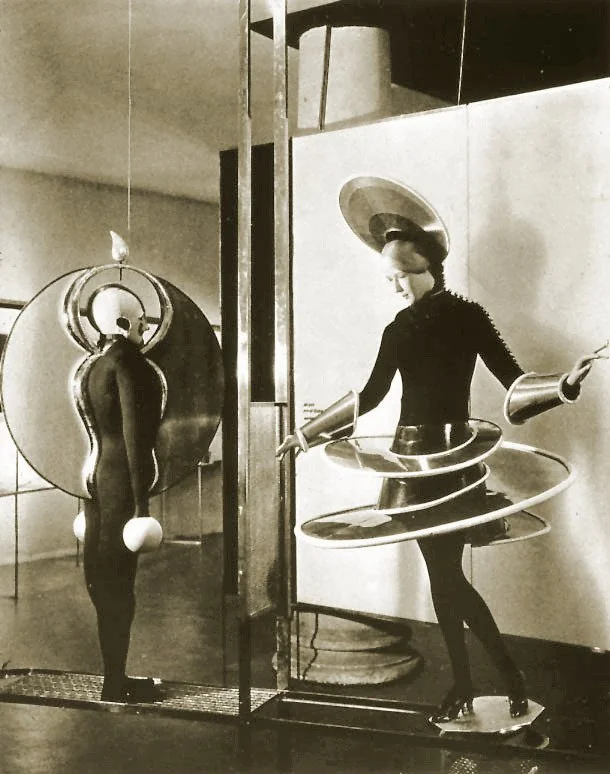
Kostüme für das Triadische Ballett.
Oskar Schlemmer, 1924
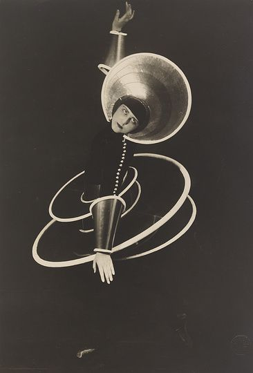
Kostüme für das Triadische Ballett
Oskar Schlemmer, 1927
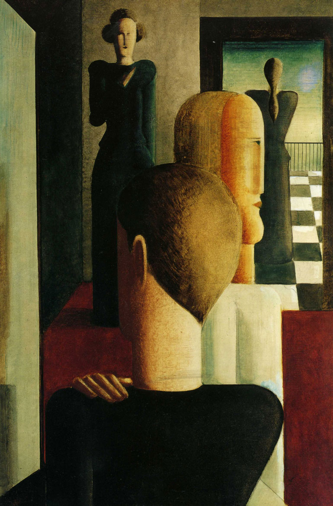
Vier Figuren im Raum
Oskar Schlemmer, 1925
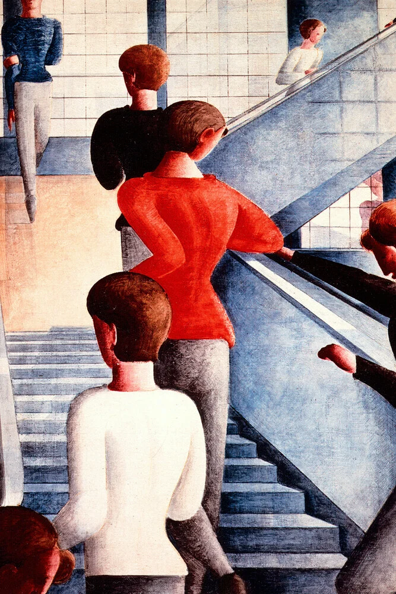
Bauhaus Stairway
Oskar Schlemmer, 1932